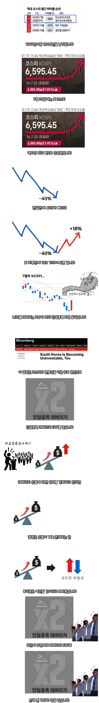
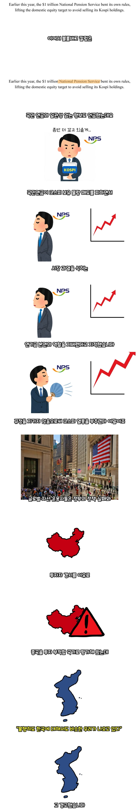

금융정책이 ㅅㅂ 리벨런싱 막은뒤에 선거있다고 대책없이 레버리지까지 지른건 진짜 뺨아리 쳐맞아지
연기금이 비중조절해서 시장 안정화를 해야하는데
시장은 시장에 맡겨야지 개씨발 그놈의 선거만 껴있으면 할수있다 나라면 이지랄로
어중간하게 개입해서 수습도 못하고
항상 책임자는 소리소문없이 런치고
답안나와서 손을 놔버리니 악순환만 반복
지금 솔직히 대안이 있나?
외인들한테 끌려가는 놀음판이라 제대로된 대책이 없어서 분석만하고 몇달째 손놓고있는데
인물이라도 좀 제대로된 사람들을 영입하던지 미국가서 설명회던 해명회던 뭐라도좀 하라고!!!!
국민연금 보면 규칙대로 기본대로 하는 게 제일 중요
표받을 거라고 징징거리는 거 규칙무시하고 들어주다가
ㅈ됨
단순히 못 팔아서 문제라기보다
국민연금 포지션 다 들통나고 외인들 손에 놀아나는 게 ㅈ된거임
시장에 맡기자 좀 시발
잘되면 내 탓 안되면 조상탓
틀린 말은 크게 없는데 여론몰이로 개미 희롱하는 블룸벅 씹쌔끼가 하니까 ㅈ같네?
그야 이새끼들은 언론계 마이클버리 자아를 투영한 언론이니까.
8년전에도 업계 최다시장의 서버용 메인보드 핵심인 슈퍼마이크로 에세 mlc세라믹 콘텐서크기만한 스파이칩 심어놓았다고 사실검증조차안한채로 개 씹구라기사 쳐올린 새끼들임.
아씨 그거 구라였어?ㅋㅋ
ㅇㅇ... "에세 mlc" 는 오타고 "에서 mlcc"
그냥 국민성이 제일문제같음,
위험표시가 어느 지역에 있는지만 봐도...
국민 수준에 맞는 정부를 가진데!!
그래 아직도 물고 빨고 하드라
민주주의 국가에서 국민 모두의 책임이지 뭐 ㅋㅋㅋㅋ
비응신 새끼가 일을 잦같이 하신탓에